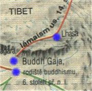
Šíření buddhismu v Asii
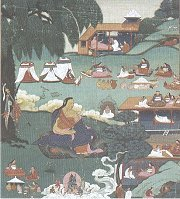
Básník Milaräpa
|
TIBET
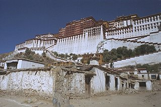
Tibeťané neměli nikdy lehký život. Museli se vyrovnat s velmi drsnými životními podmínkami Tibetské náhorní plošiny, kde je průměrná nadmořská výška přes 4000 m. Zdá se, že o co výše žijí, o to blíže mají k bohu. Podle jejich původního náboženství bön byl praotcem Tibeťanů opičák a jeho ženou byla démonka. Brzy ho ale nahradil buddhismus a jeho pozdější forma – lámaismus. Duchovním i správním centrem Tibetu se stala Lhasa. V extrémních životních podmínkách vybudovali věřící přes šest tisíc klášterů, ale po čínské okupaci jich zbylo jen třináct. Číňané od roku 1950 povraždili 1,2 milionu Tibeťanů a řadu z nich včetně dalajlámy donutili k odchodu do exilu.
|
Historie
Tibetský stát se zformoval v 7. stol. n.l. Díky úzkým kontaktům s Indií sem začíná v 8. stol. pronikat buddhismus. Ve 14. stol. se stala centrem země Lhasa a prosadil se zde lámaismus. Nejvyšším představitelem tohoto náboženství byl dalajláma. Od roku 1642 je i světským vládcem Tibetu. V 18. stol. si na Tibet dělala nároky Čína a později i Velká Británie. V roce 1950 byl obsazen čínskou armádou. Po protičínském povstání, které bylo krvavě potlačeno, uprchl dalajláma do Indie a od roku 1959 trvale pobývá v exilu. Od té doby se snaží pokojnou cestou dosáhnout osamostatnění Tibetu.
|
Lámaismus
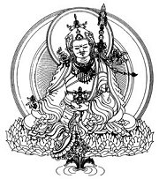
Padmasambhava neboli Guru rinpočhe
|
Lámaismus
Lámaismus je syntézou tradičního tibetského náboženství bön a tantrické větve mahájánového buddhismu. Podle tradice přinesl v 8. stol. n.l. do Tibetu buddhismus indický mnich Padmasambhava (tibetsky Päma Džungnä), kterého Tibeťané obdařili přízviskem Guru rinpočhe (Vzácný učitel).
Duchovní i světskou hlavou Tibetu je dalajláma (oceán moudrosti), který je považován za vtělení bódhisattvy Avalókitéšvary (tibetsky Čänräzig), patrona Tibetu a symbolu nekonečného soucitu a milosrdenství. Prvním dalajlámou se stal Gendündub (1391-1475). Po smrti ho nevystřídal některý z potomků nebo volený zástupce, jak je obvyklé v ostatních státních i náboženských systémech. Když dalajláma zemře, začnou lámové pátrat po dětech, které by mohly být dalším vtělením Avalókitéšvary. Podrobí je různým zkouškám a vyberou z nich nového dalajlámu, kterého pak vyučují. Nejvyšším představitelem lámaismu i celého státu se tak může stát prakticky kdokoliv!
|
Tantrismus
Tantra je mystický směr v hinduismu i buddhismu, který upřednostňuje předávání tajné tradice přímo mezi duchovním mistrem (v Indii guru, v Tibetu láma) a jeho učedníkem. K zasvěcení se používají magická zaříkadla (mantry), tajemné obrazce (mandaly) a symbolická gesta rukou (mudry). Tantra neboli vadžrajána (diamantový vozík) vznikla až v 5. stol. n.l. a vedle mahájány a hínajány bývá považována za třetí proud buddhismu. Cílem tantrických postupů je dosáhnout duchovní jednoty s Buddhou nebo bódhisattvou a prožít tak požehnané blaho.
|
Bardo thödol
Celý název tzv. Tibetské knihy mrtvých zní Hluboké učení o spontánním vysvobození skrze rozjímání o pokojných a hněvivých božstvech, ale zkracuje se na Vysvobození v bardu skrze naslouchání (Bardo thödol). Kniha mrtvých se jí říká podle egyptské Knihy mrtvých, která se také zabývá osudy člověka po jeho smrti.
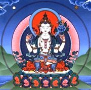
Patron Tibetu bódhisattva Avalókitéšvara
|
Tibetská kniha mrtvých (8. až 14. stol. n.l.)
Posvátná kniha lámaismu Bardo thödol (Tibetská kniha mrtvých) se zabývá dobou mezi smrtí a novým zrozením člověka. Tibeťané věří, že po smrti následuje jakýsi mezistav nazývaný bardo, během něhož se rozhoduje, jaký bude další osud nesmrtelné duše. Bardo trvá 49 dní a má tři hlavní fáze. Nejdříve přichází „stav smrti", ve kterém dochází k oddělení ducha od těla. Následuje „stav zakoušení pravé podstaty všech jevů", kdy mu pokojná a hněvivá božstva ukazují jeho vlastní povahu. Poslední etapou je „stav vznikání", ve kterém duše může zabránit svému znovuzrození nebo si vybírá místo a formu nového převtělení. Aby došlo k co nejlepšímu výsledku, musí být nad umírajícím (a dalších 49 dní po jeho smrti) čtena tato kniha. Duši se totiž zjevují různé fantastické představy, jejichž význam může díky „naslouchání" Tibetské knize mrtvých správně pochopit, a vyvarovat se tak špatnému znovuzrození.
|
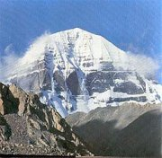
Kailás je posvátnou horou Tibeťanů. Každý z nich by měl podniknout pouť k této hoře a rituálně ji obejít. Tuto horu považovali za mýtický střed světa už Indové. Není proto divu, že se objevuje v jejich eposu Rámájana – když je statečný Ráma smrtelně raněn, musí přinést opičí král Hanuman z vrcholku vedle hory Kailás léčivé byliny, ale protože je nemůže poznat, raději přenese do Indie celý kopec...
Věříš v posmrtný život? Jak si ho představuješ?
Do kterého zvířete se chceš převtělit? Proč?
|
Sakja-pandita (1182-1251)
Sakja-pandita (Učenec ze Sakji) pocházel z bohatého tibetského rodu a stál v čele nejvýznamnější lámaistické sekty Sakjapa. Stal se vazalem Mongolů, aby uchránil Tibet před jejich vpádem. Jeho literární činnost byla velmi rozsáhlá.
Souhlasíš s poselstvím jednotlivých čtyřverší? Proč?
Vyber si jedno čtyřverší a použij ho jako motto ke krátkému příběhu.
|
Sakja-pandita: Pokladnice moudrých rčení
Pokladnice moudrých rčení je sbírka 457 čtyřverší. Tvoří ji devět rozprav (o lidech moudrých, urozených a hloupých, o dobru a zlu, špatném chování, o správných a nepatřičných způsobech, o skutcích a morálce).
|
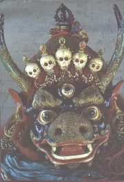
Ochranné božstvo Tamdin
|
Tibetské písmo
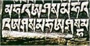
Nápis na tibetském chrámu
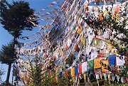
Modlitební praporky s nápisy najdete rozvěšené po celém Tibetu.
|
Jazyk a písmo
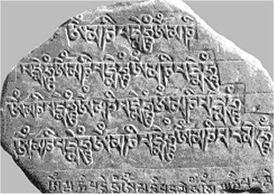
Tibetština patří mezi jazyky tibetočínské (větev tibetsko-barmská). Tibetské písmo vzniklo v 7. stol. a v jeho podobě se odráží značný vliv písma indického.
Další díla
Kandžur a Tandžur (překlady buddhistických spisů)
Sönam Gjalcchäna: Zrcadlo králů (historie Tibetu)
Epos o Gesarovi
Milaräpa: Sto tisíc zpěvů
|
Óm mani padmé húm
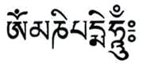
Nejznámější tibetskou mantrou je Óm mani padmé húm. Óm a húm jsou mystické slabiky, prostřední dvě slova lze přeložit jako „klenote v lotosu“. Tato mantra slouží k vzývání bódhisattvy Avalókitéšvary, patrona Tibetu.
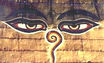
|
Internetové stránky
Tibetská ikonografie
Lungta, občanské sdružení na podporu Tibetu
Potala, centrum tibetských studií
Tibet, informace
Tibet, informace
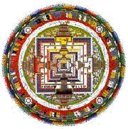
|
Doporučená četba
Bajka o ptácích a opicích, přel. J.Kolmaš, Praha 1965
Černý mrak v bílém, Tibetská lidová poezie, přel. Kolmaš, Štroblová, Praha 1976
Disideri, I.: Cesta do Tibetu, přel. J.Hajný, Praha 1976
Kolmaš, Josef: Suma tibetského písemnictví, Argo, Praha 2004
Láma Yongden, David-Neelová, A.: Mipam, láma s Paterou moudrostí, přel. J.Heyduk, Odeon, Praha 1969
Lu Dub: Strom moudrosti, Mudrosloví tibetského lidu, přel. Poucha, Eisner, Praha 1952
Nansa Öbum, Mystérium o životě a zmrtvýchvstání krásné paní Nangsy, přel. J.Kolmaš, Praha 1993
Rampa, Lobsang T.: Třetí oko (román)
Sakja-pandita: Pokladnice moudrých rčení, přel. Kolmaš, Štroblová, Praha 1988
Sönam Gjalcchäna: Zrcadlo králů
Svět tibetského buddhismu, Praha 1996
Tibetská kniha mrtvých, přel. J.Kolmaš, Aurora, Praha 1998
Tibetské listy (časopis)
|
Připrav si referát o některé z uvedených knih nebo internetových stránek.
Pokus se zjistit význam slov lungta a mandala.
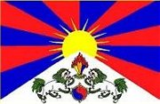
Jako symbol solidarity s utrpením tibetského lidu vyvěšují každoročně dne 10. března občané demokratických zemí tibetskou vlajku.
|
|